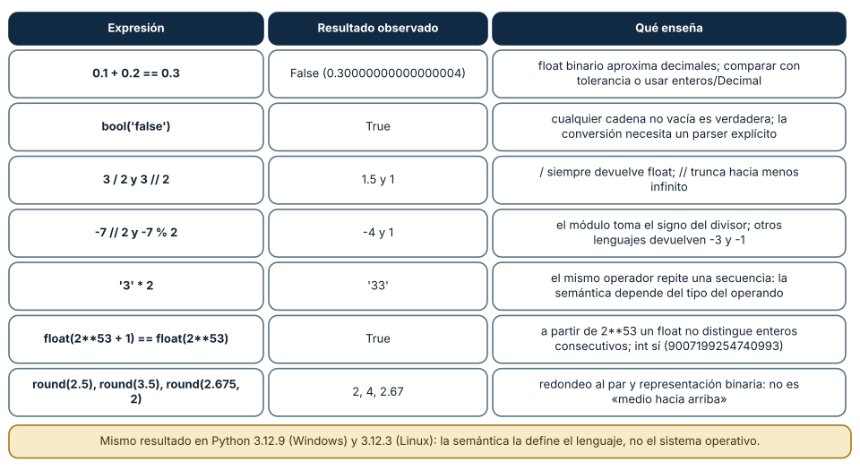
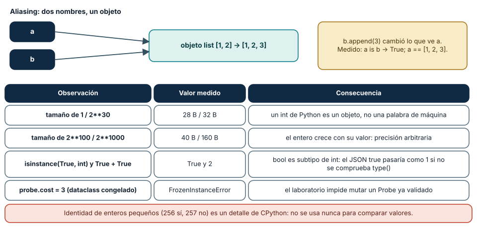
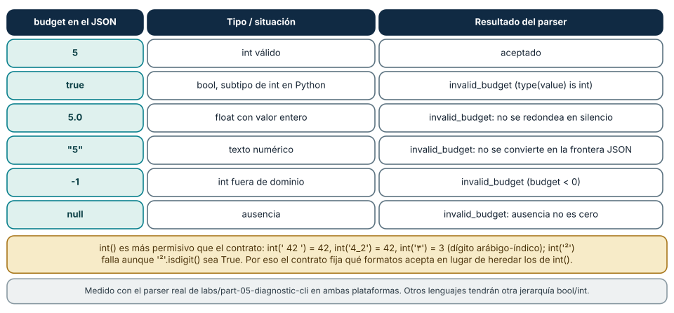

← SE-060 — Proyecto: especificación y solución contrastable · ↑ Parte 05 · 📚 Índice completo · 🌐 Portal · SE-062 — Control de flujo y decisiones →
Punto profesional y fundamento pedagógico
Punto profesional. La clase existe para explicar valores, tipos, expresiones y nombres por su semántica y ciclo de vida.
Por qué aparece aquí. Se sitúa después de Proyecto: especificación y solución contrastable y antes de Control de flujo y decisiones: convierte el conocimiento anterior en una decisión observable que la clase siguiente podrá reutilizar. La continuidad se comprueba en el artefacto, no por compartir vocabulario.
Error conceptual que debe corregir. Tratar variable como caja idéntica en todos los lenguajes.
Secuencia de aprendizaje. Antes de leer la solución, el estudiante predice el resultado del caso normal y del error conceptual anterior. Luego explica un caso resuelto paso a paso, construye un contraejemplo que cambie la decisión y, sin consultar el texto, reconstruye el mecanismo y lo aplica a una entrada nueva. La secuencia usa predicción, explicación propia, contraste y recuperación. ICAP distingue participación de construcción de conocimiento; How People Learn II exige conectar conocimiento previo, contexto y transferencia; la práctica de recuperación respalda producir de nuevo la explicación tras una demora; y Education for Life and Work exige devolución que explique la causa del error.
Evidencia de aprendizaje. Value-trace.md con tipo, identidad, enlace, mutación y liberación. Debe contener predicción previa, observación, explicación causal, contraejemplo, criterio de aceptación y una nota de qué dato haría cambiar la conclusión.
Límite de la conclusión. La traza de Python no define la semántica de otros lenguajes.
Trazabilidad fuente → afirmación
| Fuente primaria u oficial | Afirmación que respalda | Lo que no prueba |
|---|---|---|
| Python Tutorial | define la semántica y los límites de la API de Python utilizada en el experimento | No demuestra por sí sola que el artefacto del estudiante sea correcto. |
| Python Language Reference | define la semántica y los límites de la API de Python utilizada en el experimento | No demuestra por sí sola que el artefacto del estudiante sea correcto. |
Antes de empezar
Esta clase construye la CLI diagnóstica, implementación incremental de la especificación del modelo de decisión diagnóstica. Recupera SE-060 y convierte una regla ya modelada en comportamiento ejecutable o comprobable. Trabaja en cambios pequeños: predicción, código, ejecución, evidencia y explicación. Ejecutar sin poder explicar el resultado no completa la práctica.
Prerrequisitos
- Python 3.11 o posterior disponible como
pythonopython3; registra la versión real. - Terminal, editor de texto y Git; no se requieren paquetes externos.
- Comprender el contrato del modelo de decisión diagnóstica: entradas, resultados, errores e invariantes.
Problema auténtico
La especificación del modelo de decisión diagnóstica llega a implementación como la CLI diagnóstica. El primer prototipo mezcla milisegundos con segundos, texto con números y None con una medición real. Python ejecuta varias combinaciones, pero ejecución no equivale a significado correcto.
Objetivos observables
Al terminar podrás explicar el mecanismo del lenguaje, predecir una ejecución, implementar un caso normal y sus fronteras, diagnosticar un fallo controlado, proteger el comportamiento con evidencia y separar lo transferible de lo específico de Python.
Mapa conceptual
Ver la notación fuente del diagrama
flowchart LR
S[Especificación el modelo de decisión diagnóstica] --> V[Valores y contratos]
V --> C[Control y transformación]
C --> E[Efectos en la frontera]
E --> O[Salida observable]
O --> T[Prueba y diagnóstico]
T -->|defecto o caso nuevo| SEl código no reemplaza la especificación: la materializa bajo reglas concretas del lenguaje y del entorno. La pregunta de esta clase es: ¿Qué valor existe, qué operaciones admite y qué nombre conserva su intención?
Temas y por qué importan
| Lente | Pregunta | Evidencia |
|---|---|---|
| valor | ¿qué representa y qué tipo tiene? | ejemplo inspeccionable |
| control | ¿qué camino o repetición ocurre? | traza de estados |
| contrato | ¿qué acepta, retorna y rechaza? | casos frontera |
| efecto | ¿qué cambia fuera del cálculo? | archivo o stream controlado |
| mantenimiento | ¿cómo se detecta una regresión? | prueba y diff enfocado |
Conceptos y decisiones
1. Valores y representación
Un valor es información concreta interpretada según un tipo: 800, 800.0 y '800' no son intercambiables. Enteros de Python tienen precisión arbitraria práctica limitada por memoria; float aproxima números binarios y no representa exactamente muchos decimales. Unidades y dominio no vienen incluidos en el tipo incorporado.
2. Expresiones y evaluación
Una expresión combina literales, nombres, operadores y llamadas para producir un valor. Precedencia decide agrupación, pero paréntesis comunican intención. Operadores pueden tener semántica distinta por tipo: + suma números y concatena secuencias. Se evita depender de coerciones imaginadas.
3. Tipos y operaciones válidas
El tipo determina representación y protocolo de operaciones. bool modela dos valores, pero no sirve para distinguir desconocido de falso. None expresa ausencia, no cero ni cadena vacía. El tipado dinámico comprueba muchas operaciones al ejecutar; anotaciones ayudan a herramientas, pero no validan datos externas por sí solas.
4. Nombres, enlace y mutabilidad
Una asignación enlaza un nombre a un objeto; no copia necesariamente el objeto. Reasignar un entero cambia el enlace; modificar una lista compartida cambia el objeto visto por todos sus alias. Llamar timeout_seconds al nombre hace visible una unidad que t oculta.
5. Conversión y validación
int(texto) convierte si el formato es válido y puede fallar; no debe dispersarse por la lógica. Primero se valida el dato en la frontera, después el núcleo trabaja con valores ya interpretados. Convertir bool('false') produce True porque la cadena no está vacía: un contraejemplo clásico de conversión semánticamente incorrecta.
Qué decide el tipo: expresiones ejecutadas
Un valor no lleva su significado escrito: lo decide el tipo del operando y la regla del lenguaje. Se ejecutaron siete expresiones en Python 3.12.9 (Windows 11) y 3.12.3 (Ubuntu 24.04 bajo WSL2) y dieron resultados idénticos. 0.1 + 0.2 == 0.3 es False porque un float guarda la fracción binaria más cercana, y 0.1 y 0.2 no son exactas en base 2; la suma da 0.30000000000000004. bool('false') es True porque bool solo pregunta si la cadena está vacía, no qué dice. 3 / 2 devuelve siempre float (1.5) y 3 // 2 trunca hacia menos infinito (1); por eso -7 // 2 vale -4 y -7 % 2 vale 1, mientras que en C o en Rust el mismo par daría -3 y -1. Con enteros grandes ocurre lo contrario: int tiene precisión arbitraria (253 + 1 es 9007199254740993) pero float(253 + 1) == float(2**53) es True, de modo que convertir a float pierde exactamente lo que el entero conservaba.
La consecuencia práctica es que cada valor del programa necesita una decisión explícita de representación. Un tiempo en milisegundos puede ser int si se mide en pasos discretos, float si viene de un reloj y se compara con tolerancia, o Decimal si hay dinero; mezclarlos sin decidir produce la clase de defecto que esta clase quiere hacer visible. El redondeo también engaña: round(2.5) da 2 y round(3.5) da 4 (redondeo al par), y round(2.675, 2) da 2.67 porque el 2.675 almacenado es en realidad 2.67499999999999982236431605997495353221893310546875.

Cómo leer la figura. Cada fila es una expresión que alguien podría escribir en la CLI diagnóstica; la columna central es lo que Python devolvió y la derecha, la regla que lo explica. Léela de izquierda a derecha y cubre la columna central para predecir antes de mirar. Dónde deja de valer: vale para CPython 3.12 con floats IEEE 754 de doble precisión. La división entera con signo y el redondeo son decisiones de cada lenguaje (Rust y C truncan, JavaScript no tiene enteros), y otra implementación de Python podría variar detalles como la identidad de objetos, no estos resultados.
Nombres, objetos e identidad
En Python una variable no es una caja con un valor dentro: es un nombre enlazado a un objeto. La asignación b = a no copia, enlaza el segundo nombre al mismo objeto. Con a = [1, 2]; b = a; b.append(3), el nombre a pasa a ver [1, 2, 3] y a is b es True, porque solo existe un objeto con dos nombres. Con enteros el efecto es invisible porque son inmutables: x += 1 crea otro objeto y reenlaza x, sin tocar a quien compartía el anterior.
Esto cambia lo que significa «copiar» y qué puede salir mal en un núcleo de dominio. El laboratorio resuelve el problema con dataclass(frozen=True): intentar probe.cost = 3 lanza FrozenInstanceError, y las colecciones del estado son tuple y frozenset, que no admiten mutación. Medimos además que un entero pequeño ocupa 28 bytes (32 con 230, 40 con 2100, 160 con 2**1000): un int de Python es un objeto que crece con su valor, no una palabra de máquina. Y isinstance(True, int) es True, True + True es 2 y type(True) is int es False: bool es subtipo de int, el origen de la trampa que el parser del laboratorio evita con type(value) is int.
La identidad (is) responde otra pregunta que la igualdad (==): «¿es el mismo objeto?». Con enteros pequeños los resultados dependen de la implementación: int('256') is int('256') fue True y con 257 fue False. No se usa nunca is para comparar valores; solo para None y para centinelas.

Cómo leer la figura. El esquema superior muestra dos flechas que llegan al mismo objeto; el cambio hecho por b es visible por a. La tabla inferior reúne lo medido sobre tamaños y tipos. Dónde deja de valer: la imagen de «nombres que apuntan a objetos» describe el modelo de datos de Python. En Rust, un valor tiene un único dueño; en C++, una variable puede ser el objeto mismo. Los tamaños (28 B para un entero) son de CPython de 64 bits.
La frontera: del texto externo al valor del dominio
El laboratorio separa dos preguntas: qué dice el JSON y qué valor admite el dominio. Se probó el campo budget con seis entradas: 5 se acepta; true, 5.0, "5", -1 y null se rechazan con el mismo código invalid_budget. El caso true es el instructivo: Python lo convertiría a 1 sin avisar, pero true en un documento significa «sí», no «presupuesto de 1». 5.0 tiene valor entero pero tipo distinto, y aceptarlo en silencio convertiría el contrato en «lo que int() tolere».
Lo que tolera int() es mucho: int(' 42 ') da 42, int('4_2') da 42 y int('٣') (dígito arábigo-índico) da 3, mientras que int('²') falla aunque '²'.isdigit() sea True y '²'.isdecimal() sea False. Esa generosidad es útil en una consola y peligrosa en una frontera: dos sistemas que usan int() aceptan conjuntos de textos distintos. El contrato de entrada se escribe una vez, en el parser, y todo lo que está detrás trabaja con valores ya interpretados. La regla general es validar tipo y rango en el borde, convertir una vez y no repetir la conversión en el núcleo.
Un último matiz: ausencia y cero son valores distintos. None no es 0; un presupuesto desconocido y un presupuesto agotado exigen respuestas diferentes, y por eso el parser lo rechaza en lugar de interpretarlo.

Cómo leer la figura. La primera columna es el texto JSON, la segunda su tipo y la tercera la decisión del parser. Solo la primera fila entra al dominio; las demás se detienen en la frontera con el mismo código de error. Dónde deja de valer: el contrato del laboratorio es un acuerdo educativo, no el estándar de JSON. Otro servicio podría aceptar 5.0 como 5 legítimamente si lo documenta; lo que no vale es no haberlo decidido.
Definiciones de trabajo
- valor: dato concreto manipulable por el programa.
- tipo: conjunto de valores y operaciones asociadas.
- expresión: combinación evaluable que produce un valor.
- enlace: asociación entre un nombre y un objeto.
- mutabilidad: capacidad de cambiar un objeto conservando identidad.
Estas definiciones describen el uso concreto en la CLI diagnóstica. Cuando Python permita varias conductas, el contrato del programa elige una y la hace visible con validación y pruebas.
Ejemplo mínimo
timeout_ms = 800
elapsed_ms = 615.4
phase = "tls"
within_budget = elapsed_ms <= timeout_ms
print({"phase": phase, "elapsed_ms": elapsed_ms, "ok": within_budget})Evalúa 0.1 + 0.2, bool('false'), 3 / 2, 3 // 2 y '3' * 2. Antes de ejecutar predice valor y tipo; después explica qué interpretación sería peligrosa en la CLI diagnóstica.
Ejecuta el fragmento en un archivo, no solo en una conversación interactiva. Conserva comando, versión, salida y explicación de cada línea relevante.
Ejemplo profesional
La CLI diagnóstica mantiene duration_ms como número no negativo y outcome como texto de un conjunto validado. La entrada textual se convierte una sola vez. El informe conserva la unidad en el nombre y en JSON para impedir que una persona trate 800 ms como 800 s.
El criterio profesional es que el comportamiento pueda ser consumido, diagnosticado y cambiado sin depender de conocimiento oral ni de estado oculto.
Práctica guiada
- crea valores válidos y límite para una observación.
- predice cinco expresiones y comprueba con
type. - demuestra aliasing con dos nombres para una lista.
- centraliza una conversión de texto a milisegundos.
- rechaza negativo, vacío y formato no numérico.
- ejecuta
python -m unittest -vcuando existan pruebas y registra el resultado exacto.
Ejercicios
- Predicción: antes de ejecutar, escribe valor y tipo de
7 // -2,7 % -2,True + True,'a' * 3yround(0.5); ejecuta y explica cada discrepancia. - Frontera: añade al parser una regla para
costy pruébala con1,0,1.5,truey"1"; escribe una prueba por cada rechazo con su código. - Aliasing: construye un
Statecon una lista en lugar de una tupla y muestra cómo una función que «solo lee» modifica el estado original; vuelve a la tupla y explica qué garantía recuperaste. - Transferencia: describe en pseudocódigo cómo representarías
budgeten un lenguaje sinboolsubtipo de entero y qué prueba mantienes idéntica.
Reto verificable
Entrega un cambio que incluya comportamiento, caso normal, caso límite, fallo controlado y explicación. Otra persona debe poder ejecutar los comandos desde un checkout limpio y relacionar cada salida con una regla del modelo de decisión diagnóstica.
Demostración guiada
- Escribe la entrada y la salida esperada antes del código.
- Ejecuta el caso mínimo y observa valores intermedios sin dejar prints permanentes en el núcleo.
- Añade el caso frontera que obligue a decidir, no solo a teclear.
- Introduce el fallo descrito abajo y confirma que la evidencia lo detecta.
- Corrige, ejecuta toda la suite y revisa el diff por efectos no deseados.
Preguntas frecuentes
¿float o Decimal para tiempos?
Un tiempo medido por un reloj es float y se compara con tolerancia; un tiempo contado en pasos o un presupuesto discreto es int; el dinero va en enteros de la unidad menor o en Decimal. Elegir por la naturaleza del dato, no por comodidad.
¿Por qué is a veces da True con números?
Porque CPython reutiliza objetos enteros pequeños (medimos que 256 sí y 257 no). Es un detalle de implementación: comparar valores se hace con ==, e is queda para None.
¿Las anotaciones de tipo evitan el caso true?
No. Una anotación budget: int no impide que llegue True desde un JSON, porque bool es un int válido. La comprobación en ejecución (type(value) is int) es lo que protege.
¿Es lo mismo None que 0 o cadena vacía?
No. None indica ausencia; 0 es un valor. Comparar con is None evita que if x: mezcle ausencia con cero.
Fallo controlado y diagnóstico
Prueba el parser con budget: true. Predice el resultado antes de ejecutarlo, ejecútalo con python -m diagnostic_cli y observa invalid_budget y el código de salida 3. Después sustituye en una copia type(value) is int por isinstance(value, int) y repite: el JSON true pasa como presupuesto 1 y el informe sale con un estado que parece válido. La prueba test_parse_rejects_boolean_budget_without_silent_integer_coercion falla en la copia modificada; es el único guardián de esa regla. Registra la causa (bool es subtipo de int), la regla que debe permanecer (tipo exacto) y la prueba de regresión.
Errores comunes y cómo corregirlos
| Síntoma | Causa | Corrección |
|---|---|---|
0.1 + 0.2 == 0.3 es False | los floats guardan aproximaciones binarias | comparar con tolerancia (math.isclose) o trabajar con enteros/Decimal |
--enabled false queda activado | bool('false') es True (cadena no vacía) | parser explícito que acepte solo valores documentados |
| un cambio en una lista aparece «en otra variable» | dos nombres para el mismo objeto | copiar (list(a)) o usar tuplas inmutables |
un presupuesto true pasa como 1 | bool es subtipo de int | type(value) is int y prueba que lo cubra |
int('²') falla pero '²'.isdigit() es True | isdigit y isdecimal no coinciden con lo que int acepta | no usar isdigit como validador; intentar la conversión y manejar ValueError |
Entorno y archivos clave
work/SE-061/
├── diagnostic_cli/
│ ├── __init__.py
│ ├── domain.py
│ ├── cli.py
│ └── __main__.py
├── tests/
│ └── test_diagnostic_cli.py
└── README.mdNo instales dependencias para resolver lo que cubre la biblioteca estándar. README.md conserva versión, comandos, entradas, salida, limpieza y límites. Los fragmentos son pedagógicos; intégralos solo después de entender su contrato.
Laboratorio integrado de la Parte 05
Trabaja sobre labs/part-05-diagnostic-cli. Traza budget, authorized, Outcome y candidates desde los bytes JSON hasta los objetos inmutables de domain.py. Después cambia budget por true y explica por qué aceptar esa entrada sería una coerción semánticamente incorrecta aunque isinstance(True, int) sea verdadero en Python. La evidencia aprobatoria es la predicción previa, el error invalid_budget observado y una regla que distinga representación externa, tipo del lenguaje y valor del dominio.
Seguridad, ética y accesibilidad
- usa fixtures sintéticos y no incluyas tokens, rutas personales ni incidentes reales;
- limita tamaño, profundidad y tiempo de entradas no confiables;
- separa stdout parseable de stderr y redacta datos sensibles;
- ofrece mensajes accionables y no dependas solo de color;
- preserva autorización como regla del núcleo, no como checkbox de UI;
- no uses
eval,execni construcción de shell con entrada externa.
Puente hacia el trabajo con agentes
Un agente que llama herramientas recibe argumentos como JSON generado por un modelo. Todo lo medido aquí reaparece: el modelo puede emitir "5" donde se esperaba 5, o true donde se esperaba un entero, y un servidor que acepte la coerción ejecutará una acción con un valor que nadie decidió. La defensa es la misma que en el laboratorio: un esquema estricto en la frontera de la herramienta, rechazo con un código estable (que el agente pueda leer y corregir) y ninguna conversión implícita en el núcleo. Un esquema JSON describe estructura, pero la regla «un bool no es un presupuesto» sigue necesitando una prueba que la fije. Las partes de herramientas y de seguridad agentic retoman este límite.
Transferencia
Reimplementa el contrato, no la sintaxis. Identifica cómo el segundo lenguaje representa ausencia, error, mutabilidad y módulos. Conserva fixtures y resultados públicos para detectar una diferencia semántica.
Evaluación y evidencia
| Criterio | Evidencia para aprobar |
|---|---|
| comprensión | predicción y explicación de ejecución |
| comportamiento | normal, límite e inválido según contrato |
| diseño | cálculo separado de efectos y dependencias visibles |
| diagnóstico | fallo mínimo, causa y regresión |
| reproducibilidad | versión, comandos y salidas desde checkout limpio |
Fuentes
- Python Tutorial — define la semántica y los límites de la API de Python utilizada en el experimento.
- Python Language Reference — define la semántica y los límites de la API de Python utilizada en el experimento.
- Python Data Model: identidad, tipo y valor de un objeto, y objetos mutables e inmutables.
- Floating-Point Arithmetic: Issues and Limitations: por qué 0.1 + 0.2 no es 0.3 y cómo se representan los floats.
- Built-in Types: Numeric Types: operaciones numéricas, división entera y verdad de los valores.
- decimal — Decimal fixed-point and floating-point arithmetic: alternativa exacta para magnitudes decimales.
- dataclasses — Data Classes:
frozen=Truey la excepciónFrozenInstanceError.
La documentación oficial define el lenguaje y la biblioteca; no demuestra que la CLI diagnóstica cumpla su dominio. Esa evidencia vive en contratos, pruebas y ejecución reproducible.
Límites y siguiente paso
Los tipos incorporados no expresan todas las reglas del dominio ni eliminan precisión finita. La siguiente clase usa condiciones para elegir comportamiento sin perder casos.
Lo que no se midió. No se midió el comportamiento en macOS ni en otras implementaciones de Python (PyPy, MicroPython); los resultados de float, tamaños y redondeo son de CPython 3.12 con IEEE 754 de doble precisión.
Glosario
- valor: dato concreto manipulable por el programa.
- tipo: conjunto de valores y operaciones asociadas.
- expresión: combinación evaluable que produce un valor.
- enlace: asociación entre un nombre y un objeto.
- mutabilidad: capacidad de cambiar un objeto conservando identidad.
← SE-060 — Proyecto: especificación y solución contrastable · ↑ Parte 05 · 📚 Índice completo · 🌐 Portal · SE-062 — Control de flujo y decisiones →